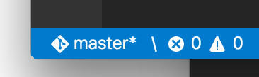

这几天正在研究三个编辑器，Notepad++、Sublime Text 3、Visual Studio Code。由于这几个编辑器都有功能丰富、教程繁多的特点，一时间说谁好谁坏还不行。我从一个简单的例子出发来讲述这三个编辑器的一些功能和他们之间的比 较，这也是对我这几天在网上爬上爬下的一个小小的总结。
我们的这个例子就是在编辑器里面配置命令行来运行SAS，之所以这样是因为SAS9.3对我使用的Windows10不支持，给直接安装SAS和使 用SAS自带的增强型编辑器带来了困难。这个情况在之前已经提到过，并且给出了用UltraEdit配置.wsf文件运行SAS的一个方法。现在我有更好 的、高效利用编辑器的、快速运行SAS的方法。
我们要用到的是Notepad++、Sublime Text 3、Visual Studio Code这三个编辑器。对于Notepad++我已经不陌生了，但是Sublime和VSCode还是第一次用，不过就算是刚刚上手，我也瞬间感受到了他们的强大。
在Notepad++里面，通过运行来添加快捷键启动命令行。 运行 -> 运行 或者按
F5
你会看到一个输入框，在框内输入cmd命令行然后保存为快捷键，之后就可以在你打开的 .sas 文件中运行这个命令行程序。

public class HelloWorld{
public static void main(String[] args){
System.out.println("Hello, world!");
}
}